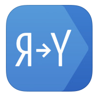

Переводчик Google Пожалуй самый популярный и удобный web-переводчик, имеющий множества дополнительных функций как распознавания языка и зачитывание речи.
Переводчик Google Пожалуй самый популярный и удобный web-переводчик, имеющий множества дополнительных функций как распознавания языка и зачитывание речи.
 Яндекс.Перевод переводчик похож на Google. так же имеет все необходимые функции, как перевод страниц, распознавание языка, будет наиболее удобен пользователям данной поисковой системы, так же имеет расширения для всех популярных браузеров.
translate.ru Позичионирует себя как Первый онлайн-переводчик Рунета. Есть поиск по словарям, перевод сайтов, различные грамматические правила и транскрипции
 META.UA онлайн переводчик который построен на технологии машинного перевода "Trident Software" удобен, имеет проверку орфографии
META.UA онлайн переводчик который построен на технологии машинного перевода "Trident Software" удобен, имеет проверку орфографии